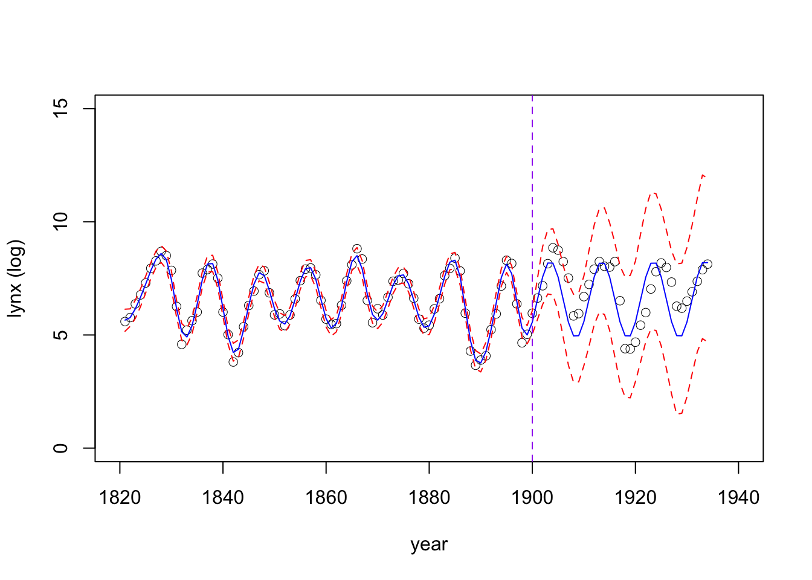
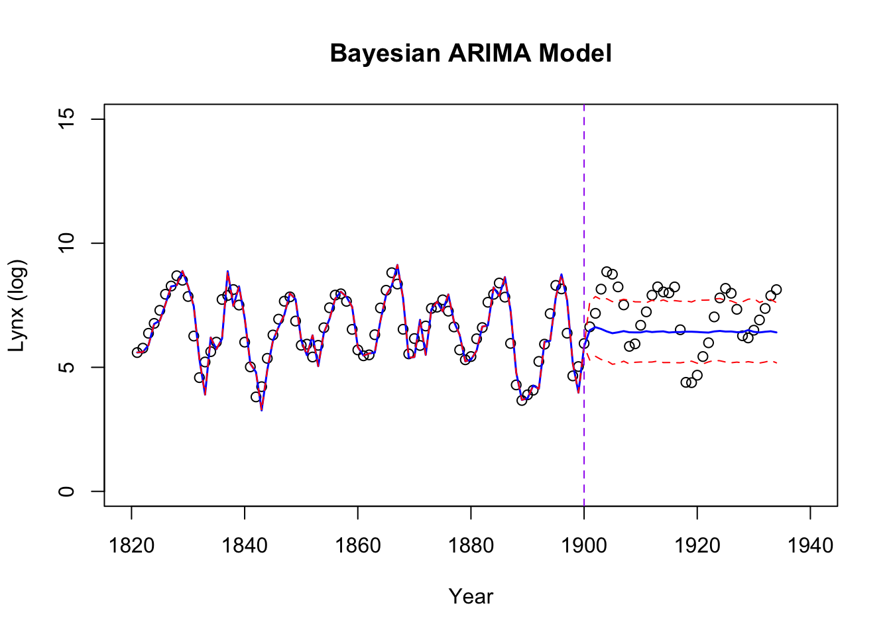

Last updated: 2024-11-21
Checks: 7 0
Knit directory: online_tut/
This reproducible R Markdown analysis was created with workflowr (version 1.7.1). The Checks tab describes the reproducibility checks that were applied when the results were created. The Past versions tab lists the development history.
Great! Since the R Markdown file has been committed to the Git repository, you know the exact version of the code that produced these results.
Great job! The global environment was empty. Objects defined in the global environment can affect the analysis in your R Markdown file in unknown ways. For reproduciblity it’s best to always run the code in an empty environment.
The command set.seed(20241120) was run prior to running
the code in the R Markdown file. Setting a seed ensures that any results
that rely on randomness, e.g. subsampling or permutations, are
reproducible.
Great job! Recording the operating system, R version, and package versions is critical for reproducibility.
Nice! There were no cached chunks for this analysis, so you can be confident that you successfully produced the results during this run.
Great job! Using relative paths to the files within your workflowr project makes it easier to run your code on other machines.
Great! You are using Git for version control. Tracking code development and connecting the code version to the results is critical for reproducibility.
The results in this page were generated with repository version 2cbca39. See the Past versions tab to see a history of the changes made to the R Markdown and HTML files.
Note that you need to be careful to ensure that all relevant files for
the analysis have been committed to Git prior to generating the results
(you can use wflow_publish or
wflow_git_commit). workflowr only checks the R Markdown
file, but you know if there are other scripts or data files that it
depends on. Below is the status of the Git repository when the results
were generated:
Ignored files:
Ignored: .DS_Store
Ignored: .Rhistory
Ignored: .Rproj.user/
Ignored: analysis/.DS_Store
Ignored: analysis/.Rhistory
Ignored: code/.DS_Store
Untracked files:
Untracked: code/functions.R
Untracked: code/tut.cpp
Untracked: code/tut.o
Untracked: code/tut.so
Unstaged changes:
Modified: analysis/_site.yml
Deleted: analysis/license.Rmd
Note that any generated files, e.g. HTML, png, CSS, etc., are not included in this status report because it is ok for generated content to have uncommitted changes.
These are the previous versions of the repository in which changes were
made to the R Markdown (analysis/more_comparison.rmd) and
HTML (docs/more_comparison.html) files. If you’ve
configured a remote Git repository (see ?wflow_git_remote),
click on the hyperlinks in the table below to view the files as they
were in that past version.
| File | Version | Author | Date | Message |
|---|---|---|---|---|
| Rmd | 2cbca39 | Ziang Zhang | 2024-11-21 | workflowr::wflow_publish("analysis/more_comparison.rmd") |
library(tidyverse)
library(BayesGP)
library(forecast)Here we compare the forecasting performance of the sGP model with the several other models using the Lynx dataset.
For each model, we will fit the model to the first 80 years of the data and then forecast the next 54 years. The performance will be examined using the mean squared error (RMSE) and the mean absolute error (MAE).
data <- data.frame(year = seq(1821, 1934, by = 1), logy = log(as.numeric(lynx)), y = as.numeric(lynx))
data$x <- data$year - min(data$year)
x <- data$x
y <- data$y
data_reduced <- data[1:80,]
test_data <- data[-c(1:80),]
### Region of prediction
region_lynx <- c(1821,1960)### Define a prior on 50-years predictive SD:
pred_SD <- list(u = 0.5, alpha = 0.01)
results_sGP <- BayesGP::model_fit(
formula = y ~ f(x = year, model = "sgp", k = 100,
period = 10,
sd.prior = list(param = pred_SD, h = 50),
initial_location = "left", region = region_lynx) +
f(x = x, model = "IID", sd.prior = list(param = list(u = 1, alpha = 0.5))),
data = data_reduced,
family = "poisson")Once the model is fitted, we can obtain the posterior summary as well as the posterior samples.
pred_g1 <- predict(results_sGP, newdata = data.frame(x = x, year = data$year), variable = "year", include.intercept = T)
pred_g1_samps <- predict(results_sGP, newdata = data.frame(x = x, year = data$year), variable = "year", include.intercept = T, only.samples = T)Let’s take a look at the forecasted values.
par(mfrow = c(1,2))
plot(logy~year, data = data, type = 'p', xlab = "year", ylab = "lynx (log)", xlim = c(1820,1940), lwd = 0.5, cex = 1, ylim = c(0,15))
lines(mean~year, data = pred_g1, col = 'blue', xlab = "year", ylab = "lynx (log)", xlim = c(1820,1940))
lines(q0.975~year, data = pred_g1, col = 'red', lty = "dashed")
lines(q0.025~year, data = pred_g1, col = 'red', lty = "dashed")
abline(v = 1900, col = "purple", lty = "dashed")
plot(y~year, log='y' ,data = data, type = 'p', xlab = "year", ylab = "lynx", xlim = c(1820,1940), lwd = 0.5, cex = 1, ylim = c(5,50000) ) #ylim = c(0,15))
matlines(y = exp(pred_g1_samps[,2:102]), x = data$year, col = "#FF000010", lty = 1)
Nshow = 4
matlines(y = exp(pred_g1_samps[,seq(1,Nshow)]), x = data$year,
col = paste0(RColorBrewer::brewer.pal(Nshow,'Dark2'),"99"),
lty = 1)
par(mfrow = c(1,1))Take a look at the inferential accuracy for the testing data, using the posterior median:
# MSE
mean((test_data$logy -pred_g1$q0.5[-c(1:80)])^2)[1] 0.9244069# RMSE
sqrt(mean((test_data$logy -pred_g1$q0.5[-c(1:80)])^2))[1] 0.9614608# MAE
mean(abs(test_data$logy -pred_g1$q0.5[-c(1:80)]))[1] 0.7981702As a comparison, we fit an ARIMA(2,1,0) model to the (log) transformed data.
arima_model <- arima(data_reduced$logy, order = c(2,1,0))
forecasted <- forecast(arima_model, h = nrow(test_data))
predicted_logy <- forecasted$mean
predicted_y <- exp(predicted_logy)
# Combine fitted values and forecasted means
fitted_values <- fitted(arima_model)
# Combine data for plotting
data_combined <- rbind(
data.frame(year = data_reduced$year, logy = data_reduced$logy, source = "Training"),
data.frame(year = test_data$year, logy = test_data$logy, source = "Test"),
data.frame(year = test_data$year, logy = predicted_logy, source = "Prediction")
)
fitted_and_forecasted <- c(fitted_values, as.numeric(forecasted$mean))
combined_years <- c(data_reduced$year, test_data$year)
# Combine upper and lower intervals for the full range
combined_upper <- c(rep(NA, length(fitted_values)), forecasted$upper[, 2])
combined_lower <- c(rep(NA, length(fitted_values)), forecasted$lower[, 2])
# Plot the observed data
plot(logy ~ year, data = data_combined[data_combined$source == "Training", ],
type = "p", xlab = "Year", ylab = "Lynx (log)",
xlim = c(1820, 1940), ylim = c(0, 15),
col = "black",
main = "ARIMA(2,1,0) Model")
# Add the combined fitted and forecasted mean line
lines(combined_years, fitted_and_forecasted, col = "blue", lwd = 1.5)
# Add the combined 95% prediction intervals
lines(combined_years, combined_upper, col = "red", lty = "dashed")
lines(combined_years, combined_lower, col = "red", lty = "dashed")
# Add test data points
points(logy ~ year, data = data_combined[data_combined$source == "Test", ],
col = "black")
abline(v = 1900, col = "purple", lty = "dashed")The testing performances:
# MSE
mean((test_data$logy - predicted_logy)^2)[1] 1.851862# RMSE
sqrt(mean((test_data$logy - predicted_logy)^2))[1] 1.360831# MAE
mean(abs(test_data$logy - predicted_logy))[1] 1.161994Alternatively, we could also try an ARIMA model estimated from
auto.arima function.
arima_model <- auto.arima(data_reduced$logy)
forecasted <- forecast(arima_model, h = nrow(test_data))
predicted_logy <- forecasted$mean
predicted_y <- exp(predicted_logy)
# Combine fitted values and forecasted means
fitted_and_forecasted <- c(fitted_values, as.numeric(forecasted$mean))
combined_years <- c(data_reduced$year, test_data$year)
# Combine upper and lower intervals for the full range
combined_upper <- c(rep(NA, length(fitted_values)), forecasted$upper[, 2])
combined_lower <- c(rep(NA, length(fitted_values)), forecasted$lower[, 2])
# Plot the observed data
plot(logy ~ year, data = data_combined[data_combined$source == "Training", ],
type = "p", xlab = "Year", ylab = "Lynx (log)",
xlim = c(1820, 1940), ylim = c(0, 15),
col = "black",
main = "ARIMA(4,0,1) Model from `auto.arima`")
# Add the combined fitted and forecasted mean line
lines(combined_years, fitted_and_forecasted, col = "blue", lwd = 1.5)
# Add the combined 95% prediction intervals
lines(combined_years, combined_upper, col = "red", lty = "dashed")
lines(combined_years, combined_lower, col = "red", lty = "dashed")
# Add test data points
points(logy ~ year, data = data_combined[data_combined$source == "Test", ],
col = "black")
abline(v = 1900, col = "purple", lty = "dashed")Its testing performances:
# MSE
mean((test_data$logy - predicted_logy)^2)[1] 1.324397# RMSE
sqrt(mean((test_data$logy - predicted_logy)^2))[1] 1.150825# MAE
mean(abs(test_data$logy - predicted_logy))[1] 0.9579137The above ARIMA implementation is based on the maximum likelihood estimation. Here we use the INLA package to fit a comparable Bayesian model with an AR(2) prior.
require(INLA)
# Combine data
test_data_masked <- test_data; test_data_masked$y <- NA
data_combined <- rbind(data_reduced, test_data_masked[,colnames(data_reduced)])
data_combined$idx <- 1:nrow(data_combined) # Create an index for time points
# Fit the model with INLA
formula <- y ~ 1 + f(x, model = "ar", order = 2) + f(idx, model = "iid", hyper = list(prec = list(prior = "pc.prec", param = c(1, 0.5))))
fit <- inla(
formula,
family = "poisson",
data = data_combined,
control.predictor = list(compute = TRUE),
control.compute = list(config = TRUE)
)
# Extract fitted values and posterior summaries
fitted_values <- fit$summary.linear.predictor; year <- data_combined$year
predicted_means <- fitted_values$mean
predicted_lower <- fitted_values$`0.025quant`
predicted_upper <- fitted_values$`0.975quant`
data_combined <- rbind(data_reduced, test_data[,colnames(data_reduced)])
# Plot results
plot(logy ~ year, data = data_combined,
type = "p", xlab = "Year", ylab = "Lynx (log)",
xlim = c(1820, 1940), ylim = c(0, 15),
col = "black",
main = "INLA with AR2 prior")
lines(year, predicted_means, col = "blue", lwd = 1.5)
lines(year, predicted_lower, col = "red", lty = "dashed")
lines(year, predicted_upper, col = "red", lty = "dashed")
points(logy ~ year, data = test_data,
col = "black")
abline(v = 1900, col = "purple", lty = "dashed")The testing performances:
# MSE
mean((test_data$logy - predicted_means[-c(1:80)])^2)[1] 1.382034# RMSE
sqrt(mean((test_data$logy - predicted_means[-c(1:80)])^2))[1] 1.175599# MAE
mean(abs(test_data$logy - predicted_means[-c(1:80)]))[1] 0.9804374We can also use the stan_sarima to fit a Bayesian ARIMA
model through MCMC:
require(bayesforecast)
lynx_training <- log(lynx[1:80])
lynx_test <- log(lynx[-c(1:80)])
bayes_arima = stan_sarima(ts = lynx_training, order = c(2,1,0))Visualization of the fit:
forecasted <- forecast(bayes_arima, h = length(lynx_test))
fitted_and_forecasted <- c(fitted(bayes_arima), as.numeric(forecasted$mean))
fitted_and_forecasted_upper <- c(fitted(bayes_arima), forecasted$upper[, 2])
fitted_and_forecasted_lower <- c(fitted(bayes_arima), forecasted$lower[, 2])
# Plot the observed data
plot(logy ~ year, data = data_combined,
type = "p", xlab = "Year", ylab = "Lynx (log)",
xlim = c(1820, 1940), ylim = c(0, 15),
col = "black",
main = "Bayesian ARIMA Model")
lines(year, fitted_and_forecasted, col = "blue", lwd = 1.5)
lines(year, fitted_and_forecasted_upper, col = "red", lty = "dashed")
lines(year, fitted_and_forecasted_lower, col = "red", lty = "dashed")
abline(v = 1900, col = "purple", lty = "dashed")
The testing performances:
# MSE
mean((lynx_test - forecasted$mean)^2)[1] 1.796256# RMSE
sqrt(mean((lynx_test - forecasted$mean)^2))[1] 1.340245# MAE
mean(abs(lynx_test - forecasted$mean))[1] 1.144751
sessionInfo()R version 4.3.1 (2023-06-16)
Platform: aarch64-apple-darwin20 (64-bit)
Running under: macOS Monterey 12.7.4
Matrix products: default
BLAS: /Library/Frameworks/R.framework/Versions/4.3-arm64/Resources/lib/libRblas.0.dylib
LAPACK: /Library/Frameworks/R.framework/Versions/4.3-arm64/Resources/lib/libRlapack.dylib; LAPACK version 3.11.0
locale:
[1] en_US.UTF-8/en_US.UTF-8/en_US.UTF-8/C/en_US.UTF-8/en_US.UTF-8
time zone: America/Chicago
tzcode source: internal
attached base packages:
[1] stats graphics grDevices utils datasets methods base
other attached packages:
[1] bayesforecast_1.0.1 INLA_23.09.09 sp_2.1-4
[4] Matrix_1.6-4 forecast_8.23.0 BayesGP_0.1.3
[7] lubridate_1.9.3 forcats_1.0.0 stringr_1.5.1
[10] dplyr_1.1.4 purrr_1.0.2 readr_2.1.5
[13] tidyr_1.3.1 tibble_3.2.1 ggplot2_3.5.1
[16] tidyverse_2.0.0 workflowr_1.7.1
loaded via a namespace (and not attached):
[1] RColorBrewer_1.1-3 rstudioapi_0.16.0 jsonlite_1.8.9
[4] magrittr_2.0.3 rainbow_3.8 rmarkdown_2.28
[7] fs_1.6.4 vctrs_0.6.5 aghq_0.4.1
[10] RCurl_1.98-1.16 htmltools_0.5.8.1 curl_5.2.3
[13] deSolve_1.40 TTR_0.24.4 sass_0.4.9
[16] hdrcde_3.4 StanHeaders_2.32.10 pracma_2.4.4
[19] KernSmooth_2.23-24 bslib_0.8.0 zoo_1.8-12
[22] cachem_1.1.0 TMB_1.9.15 whisker_0.4.1
[25] lifecycle_1.0.4 pkgconfig_2.0.3 R6_2.5.1
[28] fastmap_1.2.0 digest_0.6.37 numDeriv_2016.8-1.1
[31] colorspace_2.1-1 ps_1.8.0 rprojroot_2.0.4
[34] fansi_1.0.6 timechange_0.3.0 httr_1.4.7
[37] compiler_4.3.1 proxy_0.4-27 withr_3.0.2
[40] tseries_0.10-58 inline_0.3.19 DBI_1.2.3
[43] QuickJSR_1.3.1 pkgbuild_1.4.4 highr_0.11
[46] MASS_7.3-60 classInt_0.4-10 loo_2.8.0
[49] prophet_1.0 tools_4.3.1 units_0.8-5
[52] lmtest_0.9-40 quantmod_0.4.26 httpuv_1.6.15
[55] nnet_7.3-19 glue_1.8.0 quadprog_1.5-8
[58] callr_3.7.6 nlme_3.1-166 promises_1.3.0
[61] grid_4.3.1 sf_1.0-17 getPass_0.2-4
[64] cluster_2.1.6 generics_0.1.3 gtable_0.3.6
[67] fda_6.2.0 tzdb_0.4.0 class_7.3-22
[70] data.table_1.16.2 hms_1.1.3 utf8_1.2.4
[73] pillar_1.9.0 later_1.3.2 splines_4.3.1
[76] lattice_0.22-6 ks_1.14.3 tidyselect_1.2.1
[79] fds_1.8 knitr_1.48 git2r_0.33.0
[82] gridExtra_2.3 urca_1.3-4 stats4_4.3.1
[85] xfun_0.48 bridgesampling_1.1-2 statmod_1.5.0
[88] matrixStats_1.4.1 timeDate_4041.110 rstan_2.32.6
[91] mvQuad_1.0-8 stringi_1.8.4 yaml_2.3.10
[94] codetools_0.2-20 evaluate_1.0.1 cli_3.6.3
[97] RcppParallel_5.1.9 munsell_0.5.1 processx_3.8.4
[100] jquerylib_0.1.4 Rcpp_1.0.13-1 coda_0.19-4.1
[103] parallel_4.3.1 rstantools_2.4.0 MatrixModels_0.5-3
[106] fmesher_0.1.7 fracdiff_1.5-3 mclust_6.1.1
[109] bayesplot_1.11.1 Brobdingnag_1.2-9 bitops_1.0-9
[112] mvtnorm_1.3-1 scales_1.3.0 xts_0.14.0
[115] e1071_1.7-16 pcaPP_2.0-5 rlang_1.1.4